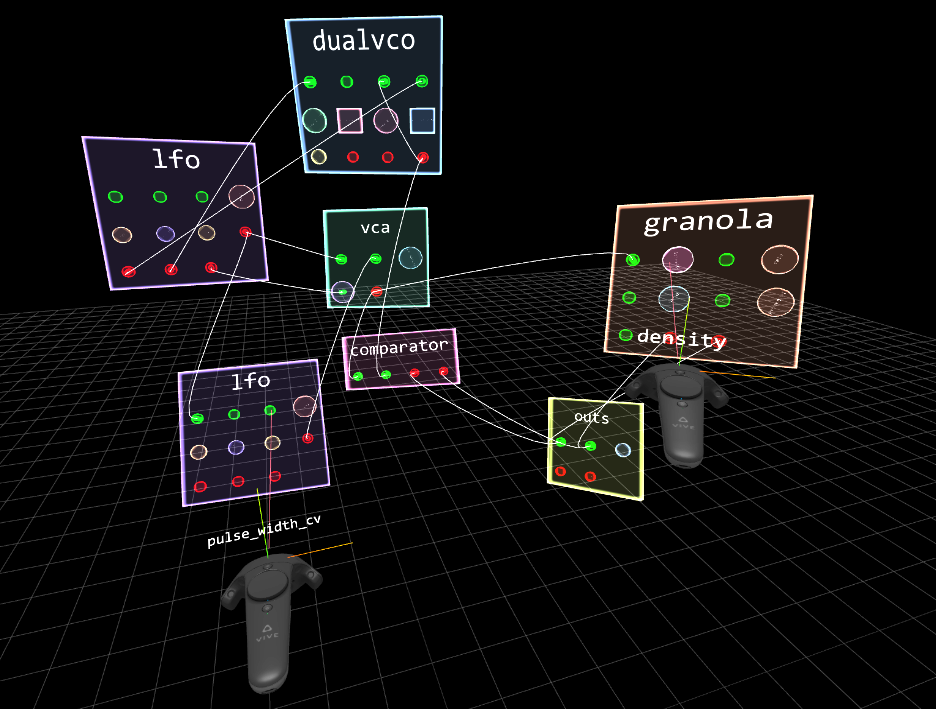

<!DOCTYPE html>
<html lang="en" >
<head>
  <meta charset="UTF-8">
  <title>Affordances and Constrains of Modular Synthesis in Virtual Reality</title>
  <link rel="stylesheet" type="text/css" href="style.css">
  

</head>
<body>
<!-- sidebar -->

<!-- Side navigation -->
<div class="sidenav">
  <a href="#abstract">Abstract</a>
  <a href="#introduction">Introduction</a>
  <a href="#affordances">Affordances & Constraints</a>
  <a href="#vms">Virtual Modular Synthesis</a>
  <a href="#embodied">Embodied Interaction</a>
  <a href="#palettes">Palettes of Modules</a>
  <a href="#knobsAreJacks">Knobs are Jacks</a>
  <a href="#signals">Signals are "Fuzzy Typed"</a>
  <a href="#conclusion">Conclusion</a>
  <a href="#footnotes">Footnotes</a>
  <a href="#references">References</a>
  <!-- <a href="#"></a> -->
</div>

<div class="mainArticle">

  <h1>
    Affordances and Constrains of Modular Synthesis in Virtual Reality
  </h1>

  <h2>
    <a href="mailto:grrrwaaa@gmail.com">Graham Wakefield</a>
    <a href="mailto:info@palumbomichael.com">Michael Palumbo</a>
    <a href="mailto:alexanderzonta@hotmail.com">Alexander Zonta</a>
  </h2>
  <h3>
    Alice Lab, York University
    <br>
    Toronto, Canada
  </h3>


  <div id="abstract"></div>
    <h2>Abstract</h2>
    This article focuses on the rich potential of hybrid domain translation of modular synthesis (MS) into virtual reality (VR). It asks: to what extent can what is valued in studio-based MS practice find a natural home or rich new interpretations in the immersive capacities of VR? The article attends particularly to the relative affordances and constraints of each as they inform the design and development of a new system called <i>Mischmasch</i>, supporting collaborative and performative patching of Max <i>gen~</i> patches and operators within a shared room-scale VR space. 
  </div>

  <h4>Keywords</h4>
  <i>
    Modular Synthesis; Virtual Reality; CCS Concepts; Applied computing; Sound and music computing; Performing arts; Human-centered computing; Asynchronous editors
  </i>

  <div id="introduction">
    <h2>Introduction</h2>
    This article focuses on the affordances and constraints of hardware modular synthesizers (MS) and room-scale, motion tracked, multi-user virtual reality (VR), and how we can most productively and creatively translate one into the terms of the other. The idea was first prompted by suggestive resonances between MS and VR; not least including the virtuality of electronic sound, the immersive workspaces of a studio practice, the embodied interaction of the instrument, and the dynamic potential of modular systems. It is undertaken with the hypothesis that at least part of what gives MS enduring fascination may illuminate ways to further inform and develop VR itself, and in those terms is directly inspired by VR pioneer Jaron Lanier's vision of collaboratively improvising reality [<a href="#ref12">12</a>]. As such the intention is not to create a prosaic simulation of MS in VR, but rather perform a translation that begins by considering what might be intrinsic characteristics and valued features of MS, in terms of their relative affordances and constraints, and how those may disappear or be enhanced in VR. That is, to what extent can what we value in MS find a natural home and perhaps even rich new trajectories in VR? 

    This article grounds the translation theoretically and practically through the design of a new software environment "Mischmasch", in which multiple performers can interactively construct and manipulate synthesizers within a shared VR space (see Figures 1 & 2), as detailed in [<a href="#ref16">16</a>]. Briefly, a server maintains and manages conflicts in a global history of edits from multiple connected clients via an extension of Operational Transforms [<a href="#ref19">19</a>] optimized for an ontology of edits to graphs of nodes and arcs. Client VR rendering and interaction is achieved using WebGL and WebVR/WebXR standards running on the recent web browsers [<a href="#ref21">21</a>]. Each user edit in VR is shared to all clients and dynamically modifies the contents of a gen patcher (via "patcher-scripting" metaprogramming), whose contents are dynamically recompiled to machine code and relinked with signicant state carried over for a seamless sonic experience [<a href="#ref22">22</a>].
  </div>

  <div id="affordances">
    <h2>Affordances & Constraints</h2>
    Any design -- be it of an instrument, composition, or piece of software -- follows decisions that are conditioned by the aordances and constraints under which it is created. The primary aordances of an environment are what it furnishes an organism; a mapping of the features of an environment to the potential actions of an agent. In analyzing the designs of musical instruments (acoustic, electronic, and software based), Magnusson suggests considering affordances and constraints in objective terms (e.g. physical and logical), subjective terms (e.g. training and habituation), and cultural terms (e.g. intersections of ideology and technology, in which we include cultures of practice) [<a href="#ref13">13</a>]. At first glance the physicality of hardware MS o ers module interfaces made of knobs that invite turning and jacks that invite cabling, arrayed around a performer within manual reach, building upon spatial memory and embodied cognition to be ready-at-hand like the console of an aircraft. The central logical characteristic of MS is its modular composition: systems are composed of distinct modules, which in principle know nothing of each other, but simply carry out their operations according to the voltages measured at input jacks and produce new voltages at output jacks. These jacks act as points of potential, and cables as wormholes between modules, allowing performers to completely transform the logical operation of the whole instrument on the y. The system as a whole has modularity in terms of how modules can be exibly inter-connected, and these interconnections are means of modulation between them. This is an a ordance that promotes exploratory and conversational cultures of practice [<a href="#ref5">5</a>], inviting redesign and recon guration of the machine even as part of a music performance [<a href="#ref10">10</a>]. The recon gurability of MS liberates it from structural constraints in a similar way as for digital design [<a href="#ref13">13</a>]. At the same time, however, it enforces logical constraints: relationships between modules must be expressed via cables as signals of stable or time-varying intensity, excluding, for example, operations of more structurally complex or abstract symbolic data. 
  </div>

  <div id="vms">
    <h2>Virtual Modular Synthesis</h2>

    There is no shortage of virtualized, software modular synthesis environments for desktop, laptop, and mobile devices, such as [<a href="#ref6">6</a>, <a href="#ref4">4</a>, <a href="#ref2">2</a>] (some incorporate quite skeuomorphic appearances of hardware [<a href="#ref2">2</a>]|but for Mischmasch such detail adds nothing to modularity and is thus eschewed). Virtualization radically reduces the nancial and physical implications of MS and also bring new capabilities: the ease of instantiating and deleting modules on the y; the rapid storage and recall of entire patches and parameter settings; and potentially more granular modi cations of the synthesis algorithms within modules themselves. As such, virtualization expands the musical capacities of the instrument itself [<a href="#ref17">17</a>]. This exibility is even more apparent in the wide variety of musically-oriented and MS-inspired visual programming languages (VPLs) [<a href="#ref11">11</a>, <a href="#ref18">18</a>]. Such liberations, however, come with loss of embodiment in their interfaces, bottlenecking human-machine interaction into narrower and flatter elds of view and frames of play. Indeed the persistence and resurgence of hardware MS is sometimes articulated as an intentional response directly away from the disembodiment of desktops and laptops [<a href="#ref8">8</a>]. Like hardware MS, room-scale VR is rich with spatial a ordances that are highly sensitive to timing, and a far greater potential for embodied cognition than desktop screen spaces. Indeed motion-tracked room-scale VR has demonstrated potential [<a href="#ref1">1</a>, <a href="#ref15">15</a>] to unite the dynamic exibility of software-based MS/VPLs with the immersive and embodied situatedness of the MS studio, which we further explore through Mischmasch. 
  </div>

  <div id="embodied">
    <h3>Embodied Interaction</h3>
    Hardware MS modules are generally arranged in a rack according to what best suits the musician, arrayed to keep surfaces within easy observation and reach. Aside from the nancial cost of adding more modules, the time and e ort required to re-arrange a rack is signi cant. In Mischmasch such material limitations evaporate: modules can be created and destroyed at whim, grabbed and positioned through immediate gestural metaphors via the VR hand controllers to wherever the musician prefers, and can be translucent to reveal objects behind (or inside) them. They are not subject to gravity and will remain in space, but can be re-arranged individually at any time with little e ort. Players in Mischmasch have reported that the ease of re-arranging modules in space and comfortably within reach and view was both useful and intuitive. In contrast to the atter planes of hardware racks, players tend to arrange modules to follow curves around their bodies. Similarly, while hardware MS require a speci c collection of cables of various lengths, cables in Mischmasch can be created at any time simply by dragging out from a jack, magnetically snap to nearby module jacks, and stretch and shrink automatically as modules are moved. Like hardware MS, jacks can support multiple "stacked" cable connections, but without the physical constraints of voltage loss: multiple cables from an output will carry precisely the same signal, while multiple cables to an input will be precisely summed. Modules' knobs can be manipulated by wrist action at close distance, or by a metaphor of a "rubber band" at arms' length for ner adjustment. We acknowledge the limited haptic response of current VR controllers and are exploring alternate devices to enrich this. 
  </div>


  <div id="palettes">
  <h3>Palettes of Modules</h3>
    A survey of modules available and used in hardware MS reveals incredible diversity [<a href="#ref7">7</a>], and also pragmatism. Some modules are almost standalone synthesizers or e ects units, some provide characteristic sub-functions of synthesis design (oscillators, envelopes, lters, etc.), but many are even simpler "building-blocks" (slew limiters, sample & hold, etc.) to support exploratory and experimental manipulations. Similarly for Mischmasch we provide a library of modules spanning high-level circuits right down to the basic primitives of gen~, available via a modal menu called up from the VR controllers (see Figure 3). Here we try to retain a ordances and concepts matured through decades of accumulated MS culture and practice, such as the remarkably rich applications of controllable ramp generators,<sup><a href="#footnote1">1</a></sup> but we eschew contemporary designs using multiple modes and menus to overcome physical constraints of available space and cost, as such constraints no longer apply in VR. Similarly, some hardware modules exist only to overcome limitations of electrical circuits|bu ered multiples, precision adders, and oscillator tuners to keep voltages precise|that have no reason to exist in VR. In contrast a quantizer's utility goes far beyond correcting analog inaccuracies. Other analog circuit behaviours are lauded in MS culture, particularly for the "warmth" of oscillators, lters, and other audio-rate modulations, and these are approximated digitally through methods such as BLIT, BLEP, and super-sampling. Moreover, the kinds of complex behaviours that can emerge from patching in feedback are signi cantly helped by the single-sample processing of gen. The library of modules available in Mischmasch is determined by parsing gen source les in the software's directory. Users can thus also populate the menu with modules of their own design; echoing the spirit of DIY analog and reprogrammable digital modules in hardware MS. To deepen the characteristic of "liveness" we are focused on the VR interface for users to dive inside modules as "sub-worlds" and immediately edit their internals in place. In this way, VR o ers players a way to overcome physical constraints of xed module interfaces as well as their behaviours. Figure 3: The "menu" modal view: selecting a module returns to the main scene with a copy in hand. 
  </div>

  <div id="knobsAreJacks">
    <h3>Knobs are Jacks</h3>
    The parametric controls of hardware modules are exposed to musicians as knobs, sliders etc. for gestural modulation, as cable inputs for signal-based modulation, and quite often both. Having both o ers greater a ordance|e.g. a dynamic signal can take the place of human gesture allowing a musician's attention to move elsewhere|however including both knobs and jacks for a parameter is not always possible due to limited space and cost. In virtual space such material constraints need no longer apply, but the habit often remains (e.g. Hetrick critiques [<a href="#ref4">4</a>] for lacking signal input counterparts for many parameters in the user interface [<a href="#ref7">7</a>]). To emphasize modularity in Mischmasch we made all knobs available for signal modulation, without compromising space, simply by allowing cables to be plugged directly into knobs themselves.All knobs in the Mischmasch environment are also input jacks, and anything you can modulate by hand you can also modulate by plugging a signal into it (e.g. the bottom-left knob of the VCA in Figure 1).<sup><a href="#footnote2">2</a></sup> This more explicitly flattens the ontology of the modular world, making patch cables analogous to virtual tentacles for automated interface modulation. This echoes the "phenotropic" vision for VR proposed by Jaron Lanier, in which modules of a software manipulate parameters of other modules as if by virtual hands, rather than directly via a more brittle API (Application Programming Interface) [<a href="#ref12">12</a>]. We note that Lanier proposed this to enhance the learnability, playability, and longevity of software, directly inspired by musical instruments. Nevertheless, signals in Mischmasch do not rotate knobs themselves; instead we follow a common pragmatic convention in hardware MS that when a parameter becomes signal-driven, the knob instead becomes an attenuator (multiplier) of the incoming signal.
  </div>

  <div id="signals">
    <h3>Signals are “fuzzy-typed”</h3>
    The modularity of MS stems from the at ontology of patch cables, whose voltages can support sonic streams, gestural articulations, events and punctuations of time, durations, musical meters, musical pitches, and any other semantics that can be expressed as signals of varying intensity over time. Many MS enthusiasts celebrate the open inter-pluggability of signals in MS, such that for example, connecting an audible frequency signal into a control or even a clock or gate input might lead to an interesting result, and vice versa. For Mischmasch we endeavoured to retain that capacity as much as possible, but at the same time, were conscious to retain conventions if they support this capacity, and consider alternatives that may enhance it. Chosen for pragmatic physical reasons that have no counterpart in virtual space, hardware MS use voltage ranges within -5v to 10v or more. For Mischmasch we used the range -1.0 to +1.0 (bipolar) for audible and other AC signals, and 0.0 to +1.0 (unipolar) for trigger, logic, and gate signals. This has the advantage that all signals are already in an appropriate range for attenuation, inversion, and amplitude modulation, without needing to normalize at each use (as is the case for [<a href="#ref2">2</a>]). Similarly, some conventions in hardware MS stem from limitations of precision that do not apply in virtual spaces. For example, analog logic circuits are never exactly 0v or +5v, so additional fuzzier threshold circuits are needed to di erentiate true and false. Although unnecessary in the digital realm, where logic modules can output precise gate values of 0.0 to +1.0, we also consider the creative a ordances of relaxing the strictness of logic values. For example, adding threshold-crossing Schmitt triggers or sigmoid shapers to logic inputs is cheap and straightforward in the digital space and opens up additional creative possibilities in mixing other kinds of signals with logic modules. Likewise, although digital triggers can be single-sample pulses rather than the edges of brief gates, digital modules will be more inter-operable with other signal types if they respond to signi cant rising/falling edges rather than pulses themselves, and we designed our library accordingly. Not all hardware MS conventions make sense in virtual space. Repeated triggers in MS are widely used for clocking, representing metric time (or some multiplication or division thereof) and used to synchronize rhythmic circuits. However, the precision of 64-bit oating point numbers in the digital realm a ords a far more convenient signal-based means of representing and operating upon musical meter via ramp signals (mapping musical time as an integral of the reciprocal of tempo). Unlike clock triggers, a ramp conveys timing information at all moments in time, not just when an onset occurs, and this information comprises both rate and phase: the ramp slope indicates the rate (tempo), the ramp value indicates the phase between onsets, and together the phase wrap indicates the onset trigger with potentially sub-sample accuracy. A negative slope indicates reversed time and zero slope precisely locates a pause, neither of which are possible with trigger-based clocks. Reifying time as a ramp signal allows a rich palette of signal-based transformations of meter that are far more dicult than with triggers: with trivial multiplication, integration, modulo and table-lookup operations one can achieve tempo changes, polymeters, time-shifts, and time maps as described in [<a href="#ref9">9</a>]. Adding varying modulation to the slope can achieve rubato, swing, and other timing deviations sometimes described as "humanization". Our library includes ramp-based timing modules for latching and sample/track and hold, shift registers, sequential switches, polymeter/polyrhythms, Euclidean rhythms [<a href="#ref20">20</a>], and more complex additive, stuttering, and shuing patterns. Combined with additional operations a range of temporal complexities can be articulated approaching those of functional music languages [<a href="#ref3">3</a>, <a href="#ref14">14</a>]. Using ramps adds no signi cant overhead but increases the expressive range, and most importantly places it into the same realm as low frequency oscillators (LFOs), attening the modular ontology in where and how timing signals can be routed and transformed. It thus encompasses the characteristic features of meter and enhances the modular spirit. 
  </div>

  <div id="conclusion">
    <h3>Conclusion</h3>
    Through the development of Mischmasch we have examined a ordances that a declarative programming environment in VR can o er for patching modular synthesis, including the exibility of virtualized MS and the immersive extension of embodied studio activity, in which virtual module surfaces can be placed at any preferred location around musicians, having cables stretch as needed and visualize contextual information, etc. Still, many of the valued characteristics of hardware MS do stem from origins in physical and technological constraints, thus we retained conventions from hardware MS that enhance the experience of patching, even if no longer strictly necessary in a precise digital space, such as quantizers, fuzzier impulse and logic detection. But we readily abandoned conventions if we could propose alternatives that more e ectively enhance modular capacity, such as treating all knobs as input jacks and preferring ramp-based signals for richer temporal modulations. We have successfully trialed Mischmasch within our lab and also at a major music-technology focused expo. Generally feedback has been very positive, and participants have without prompting remained satis ed to explore inside the VR experience for quite extended periods of time. We are now focusing on the performative a ordances that Mischmasch's architecture makes possible, including networked telematics, gestural ways to create, record, in uence and modulate signals, and using GOT editing histories for "forking", "evolving", and "merging" worlds. Moreover, this all forms a rst stepping-stone within a broader project of not only performing music, but in the spirit of VR-pioneer Jaron Lanier's vision of collectively improvising entire worlds [<a href="#ref12">12</a>]. 
  </div>

  <h3>Ethical Standards</h3>
  Supported by and following ethical guidelines of national government grants including SSHRC Canada Research Chair #950-230715, Canada Foundation for Innovation JELF #34525, and Government of Ontario Early Researcher Award #ER16-12-219, with no conflicts of interest to acknowledge.

  <div id="footnotes">
    <h3>Footnotes:</h3>
    <div id="footnote1">
      1. E.g. Eurorack's most popular module, Make Noise's "MATHS", a Serge descendent, has dozens of distinct uses.
    </div>
    <div id="footnote2">
      2. The inverse is not true: some "AC-coupled" inputs make no sense as knobs, as they cannot meaningfully respond to the lower rates of human gestures.
    </div>
  </div>


  <div class="imgbox">
    
    Figure 1: A screenshot within Mischmasch. Hand controllers select modules, knobs, jacks and cables via laser-pointers with pop-up labels.
  </div>


  <div class="imgbox">

  
  Figure 2: Three simultaneous images of Mischmasch: (left) a musician's view in VR, (right) the musician in real space, (inset) the corresponding gen patcher generated by the musician's actions.
  </div>


  <div id="references">
    <h3>References</h3>
    <div id="ref1">
      [1] N. Andersson, C. Erkut, and S. Seran. Immersive
      audio programming in a virtual reality sandbox. In
      <i>Proceedings of the AES International Conference on
      Immersive and Interactive Audio</i>, 2019.
    </div>

    <div id="ref2"></div>
    [2] A. Belt. VCV Rack. vcvrack.com, 2017. Accessed:
    2019-04-05.
    </div>
    <div id="ref3"></div>
    [3] R. B. Dannenberg. Abstract time warping of
    compound events and signals. <i>Computer Music
    Journal</i>, 21(3):61-70, 1997.
    </div>
      <div id="ref4">
    [4] M. Davidson. BEAP. github.com/stretta/BEAP,
    Dec. 2012. Accessed: 2020-01-31.
    </div>
    <div id="ref5"></div>
    [5] J. Drummond. Understanding interactive systems.
    <i>Organised Sound</i>, 14(2):124-133, 2009.
    </div>
      <div id="ref6"></div>
    [6] J. Eriksson. Automatonism. www.automatonism.com,
    2017. Accessed: 2020-04-01.
    </div>
    <div id="ref7"></div>
    [7] M. L. S. Hetrick. <i>Modular Understanding: A
    Taxonomy and Toolkit for Designing Modularity in
    Audio Software and Hardware</i>. PhD thesis, University
    of California Santa Barbara, 2016.
    </div>
    <div id="ref8"></div>
    [8] J. Holden. Using Modular Gear Live.
    www.musicradar.com/news/tech/622023, 2015.
    Accessed: 2019-04-05.
    </div>
    <div id="ref9"></div>
    [9] H. Honing. From time to time: The representation of
    timing and tempo. <i>Computer Music Journal</i>,
    25(3):50-61, 2001.
    </div>
      <div id="ref10"></div>
    [10] C. C. Hutchins. Live patch/live code. In <i>International
    Conference on Live Coding</i>, pages 147{151, 2015.
    </div>
      <div id="ref11"></div>
    [11] S. Jorda. The Reactable. <i>Revista Kepes</i>,
    5(14):201-223, 2009.
    </div>
      <div id="ref12"></div>
    [12] J. Lanier. <i>Dawn of the new everything</i>. Henry Holt
    and Company, 2017.
    </div>
    <div id="ref13"></div>
    [13] T. Magnusson. Designing constraints: Composing and
    performing with digital musical systems. <i>Computer
    Music Journal</i>, 34(4):62-73, 2010.
    </div>
      <div id="ref14"></div>
    [14] A. McLean and G. Wiggins. Tidal-pattern language
    for the live coding of music. In <i>Proceedings of Sound
    and Music Computing</i>, 2010.
    </div>
    <div id="ref15"></div>
    [15] L. Olson. SoundStage VR.
    github.com/googlearchive/soundstagevr, 2018.
    Accessed: 2020-04-05.
    </div>
    <div id="ref16"></div>
    [16] M. Palumbo, A. Zonta, and G. Wakefield. Modular
    reality: Analogues of patching in immersive space.
    <i>Journal of New Music Research</i>, pages 1{16, 2020.
    </div>
      <div id="ref17"></div>
    [17] R. Parmar. Creating an autopoietic improvisation
    environment using modular synthesis. <i>eContact!</i>,
    17(4), February 2016.
    </div>
    <div id="ref18"></div>
    [18] M. Puckette. Max at seventeen. <i>Computer Music
    Journal</i>, 26(4):31-43, 2002.
    </div>
      <div id="ref19"></div>
    [19] C. Sun and D. Chen. Consistency maintenance in
    real-time collaborative graphics editing systems. <i>ACM
    Trans. Comput.-Hum. Interact.</i>, 9(1):1-41, 2002.
    </div>
      <div id="ref20"></div>
    [20] G. T. Toussaint et al. The euclidean algorithm
    generates traditional musical rhythms. In <i>Proceedings
    of BRIDGES: Mathematical Connections in Art,
    Music and Science</i>, pages 47-56, 2005.
    </div>
      <div id="ref21">
    [21] V. Vukicevic, B. Jones, K. Gilbert, and C. V.
    Wiemeersch. WebVR. immersiveweb.dev, 2017.
    Accessed: 2019-04-01.
    </div>

    <div id="ref22">
    [22] G. Wakefield. <i>Real-time meta-programming for
    interactive computational arts.</i> PhD thesis, University
    of California at Santa Barbara, 2012.
    </div>

  </div>

  Licensed under a Creative Commons Attribution 4.0 International License (CC BY 4.0). Copyright
  remains with the author(s).
  NIME’20, July 21-25, 2020, Royal Birmingham Conservatoire,
  Birmingham City University, Birmingham, United Kingdom.
</div>

<!--partial:index.partial.html --> 
<script id="md" type="text/markdown" style="visibility:hidden;">


</script>
<div id="html"></div>
<!-- partial -->
<script src='https://cdnjs.cloudflare.com/ajax/libs/marked/1.0.0/marked.min.js'></script><script  src="./script.js"></script>

</body>
</html>
